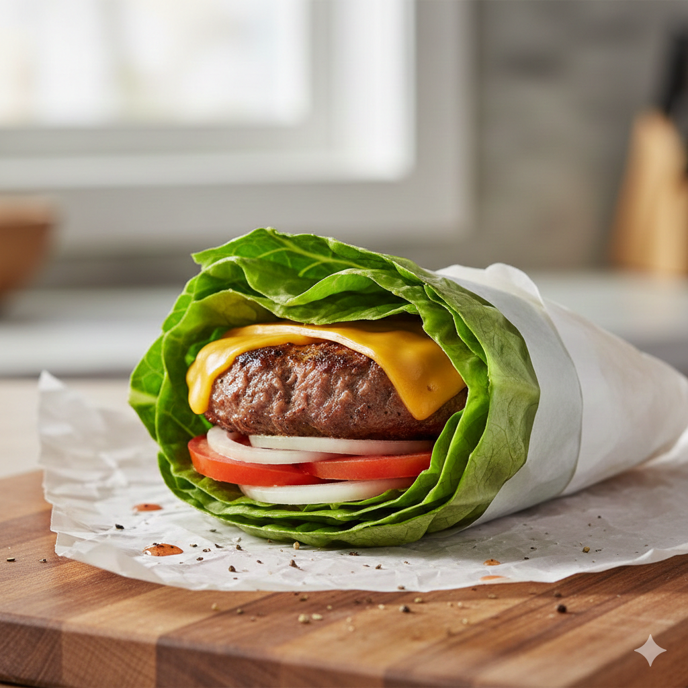

Keto Lettuce Wrapped Burger

Ready for the best burger you ever had? Look no further, this keto burger
will have you begging for seconds. The recipe is for a single patty but
everthing can be adjusted for more servings. So if you want to make 4,
just multiple everything times four.
Yield:1 Serving Prep Time:10-15 min
Cook Time:8-10 min Total Time:~25 min
Nutrition Info:
Per Serving:365 Cal | 29g Fat | 12g Sat Fat | 3g Carbs | 1g Fiber | 25g Protein |
350mg Sodium
Ingredients:
- 1/4 lb(4 oz) 80/20 Ground Beef
- Hickory flavored liquid smoke
- Killer Hogs AP seasoning(Salt, Pepper, and Granulated Garlic)
-
Toppings: Sliced Coby Jack cheese, 2-3 slices cooked bacon, sauted
onions, sugar-free ketchup, mustard, and mayo
- Large lettuce leaf for a bun
Directions:
-
Season the ground beef with a few drops of liquid smoke, and 2 tsp of
Killer hogs AP.
-
Form 1/4 lbs seasoned ground beef into a ball, then flatten into a patty
about a quarter of an inch thick
- Heat a skillet to med-high heat
-
Once the skillet is hot, place the patty on the skillet for 2-3 min.
DON'T touch until you are ready to flip
-
After 2-3 min has passed flip the patty and cook for another 2-3 min.
-
Place a slice of cheese on top of the patty and cover for 30 seconds,
allowing the cheese to melt.
- Remove patty from skillt and plac onto the lettuce leaf.
- Add toppings.
- Enjoy!
Home